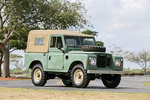

Landrover
The series landrovers range from series 1 to series 3 launched in 1956 until the V8 stage one series 3 was produced in the 1980's
The landrover series 1
The landrover series 2
The landrover series 3


The landrover series 1 was launched in 1956 and was the first landrover ever made. The landrover pictured has a full canvas tilt
The landrover series 2 was launched in the 1960s and had a 2.25 litre engine, it's headlights were still set within the bulkhead of the car. The landrover pictured has a truck cab
The landrover series 3 was mostly made by layland, the headlights now appear on each wing which helps to fit in a 2.5 litre engine under the bonnet. The landrover pictured has a full canvas tilt and a deluxe bonnet which carries the spare tyre